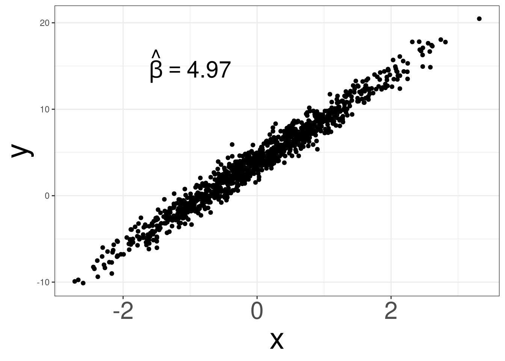
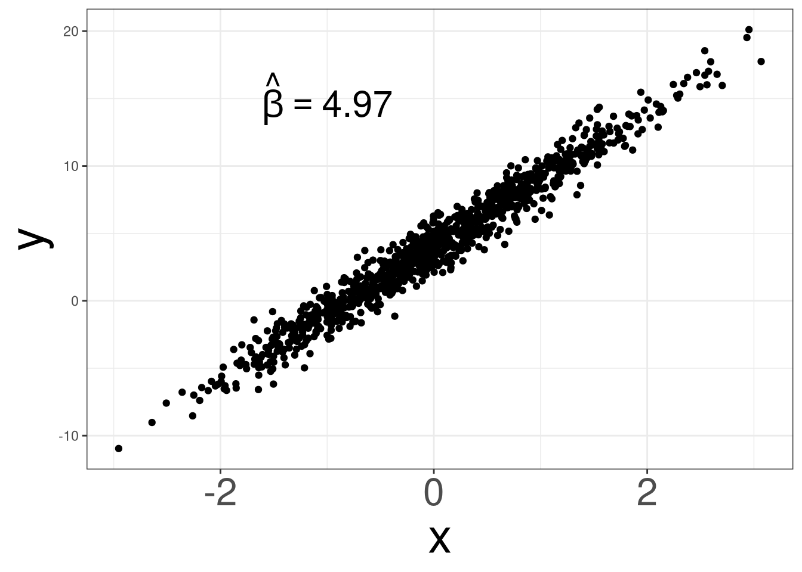
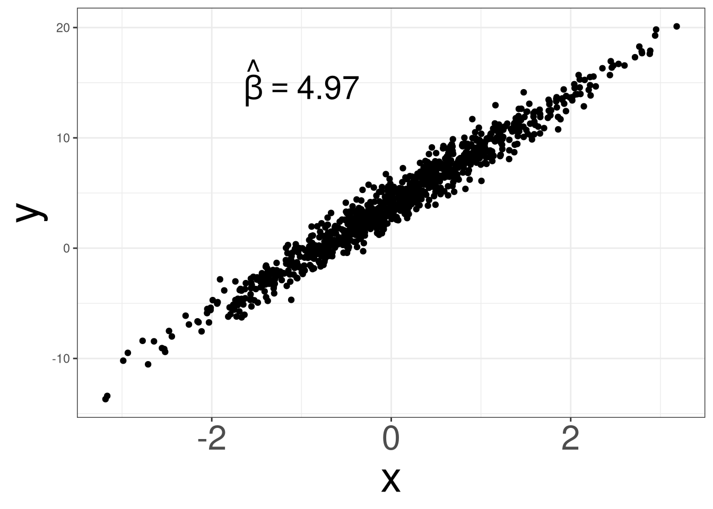
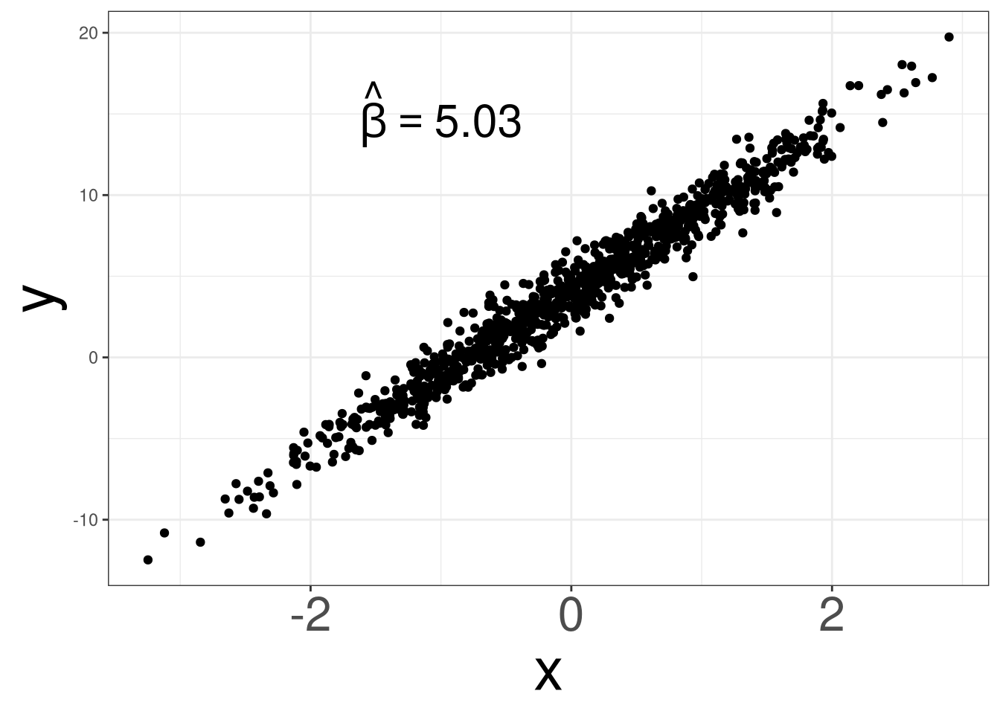
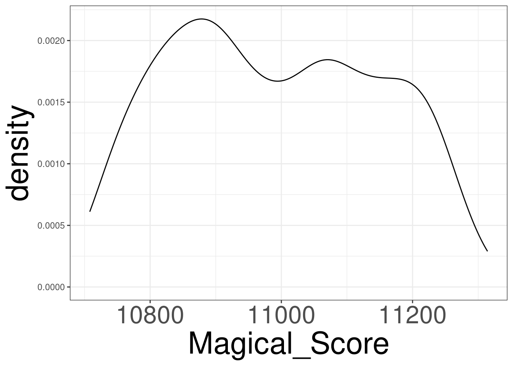
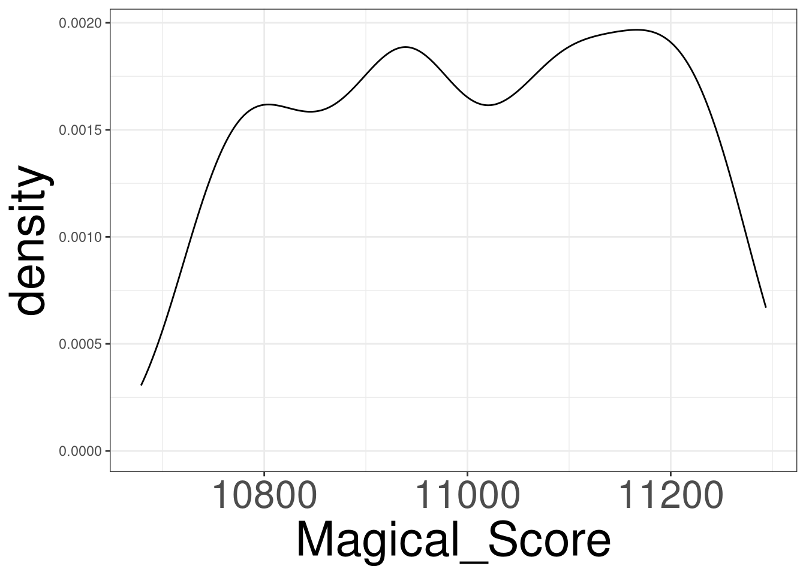
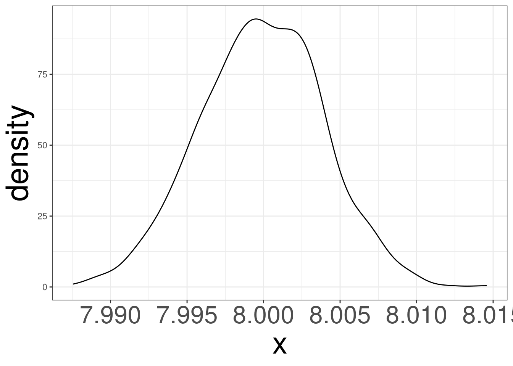

Sampling Distribution
Sampling Distribution
Sampling Distribution
Simulating Unicorns
Central Limit Theorem
Common Sampling Distributions
Sampling Distributions for Regression Models
Scientific Notation
Sampling Distribution
Sampling Distribution is the idea that the statistics that you generate (slopes and intercepts) have their own data generation process.
In other words, the numerical values you obtain from the lm and glm function can be different if we got a different data set.
Some values will be more common than others. Because of this, they have their own data generating process, like the outcome of interest has it’s own data generating process.
Sampling Distributions
Distribution of a statistic over repeated samples
Different Samples yield different statistics
Standard Error
The Standard Error (SE) is the standard deviation of a statistic itself.
SE tells us how much a statistic varies from sample to sample. Smaller SE = more precision.
Modelling the Data
\[ Y_i = \beta_0 + \beta_1 X_i + \varepsilon_i \]
- \(Y_i\): Outcome data
- \(X_i\): Predictor data
- \(\beta_0, \beta_1\): parameters
- \(\varepsilon_i\): error term
Error Term
\[ \varepsilon_i \sim DGP \]
Randomness Effect
The randomness effect is a sampling phenomenom where you will get different samples every time you sample a population.
Getting different samples means you will get different statistics.
These statistics will have a distribution on their own.
Randomness Effect 1

Randomness Effect 2
Randomness Effect 3
Randomness Effect 4
Randomness Effect 5
Simulating Unicorns
Sampling Distribution
Simulating Unicorns
Central Limit Theorem
Common Sampling Distributions
Sampling Distributions for Regression Models
Scientific Notation
Simulating Unicorns
To better understand the variation in statistics, let’s simulate a data set of unicorn characteristics to visualize and understand the variation.
We will simulate a data set using the unicorns function and only we need to specify how many unicorns you want to simulate.
Simulating Unicorn Data
#> Unicorn_ID Age Gender Color Type_of_Unicorn Type_of_Horn Horn_Length
#> 1 1 17 Male Black Rainbow Opal 5.159713
#> 2 2 3 Agender White Rainbow Opal 5.349291
#> 3 3 3 Male Gold Jewel Opal 4.921934
#> 4 4 14 Non-binary Silver Ruvas Opal 5.142722
#> 5 5 14 Male Black Jewel Aquamarine 5.014010
#> 6 6 18 Non-binary White Ember Opal 4.575182
#> 7 7 13 Agender Brown Ember Aquamarine 4.652912
#> 8 8 9 Male White Ruvas Opal 4.804055
#> 9 9 19 Genderfluid Black Rainbow Aquamarine 4.728726
#> 10 10 7 Agender Gold Rainbow Opal 5.406721
#> Horn_Strength Weight Health_Score Personality_Score Magical_Score
#> 1 31.23058 125.01323 8 0.08726362 11160.81
#> 2 26.08787 139.13117 5 1.06409501 10763.96
#> 3 28.40993 138.40186 9 0.06998508 10812.65
#> 4 25.25602 123.27227 2 0.43582575 11124.84
#> 5 28.09037 182.68155 6 0.36849131 11085.01
#> 6 28.21399 115.08631 5 1.26001491 11219.71
#> 7 31.07708 93.28854 1 1.56113264 11039.32
#> 8 28.02443 158.23565 8 0.13079778 10966.47
#> 9 28.15657 103.28272 9 0.73177954 11196.21
#> 10 27.23401 99.24704 2 0.02588088 10908.71
#> Elusiveness_Score Gentleness_Score Nature_Score
#> 1 39.92823 4.022313 967.4888
#> 2 41.18782 -0.306242 917.8104
#> 3 36.80664 30.182490 923.7942
#> 4 32.05847 11.572373 963.0666
#> 5 32.26507 41.121799 957.6649
#> 6 34.05079 38.861432 974.2426
#> 7 33.88469 22.589412 952.2323
#> 8 31.70641 31.826690 942.7393
#> 9 29.49732 25.123159 971.1747
#> 10 35.27492 55.037350 935.9875Unicorn Data Variables
#> [1] "Unicorn_ID" "Age" "Gender"
#> [4] "Color" "Type_of_Unicorn" "Type_of_Horn"
#> [7] "Horn_Length" "Horn_Strength" "Weight"
#> [10] "Health_Score" "Personality_Score" "Magical_Score"
#> [13] "Elusiveness_Score" "Gentleness_Score" "Nature_Score"We will only look at Magical_Score and Nature_Score.
Magical and Nature Score
\[ Magical = 3423 + 8 \times Nature + \varepsilon \]
\[ \varepsilon \sim N(0, 3.24) \]
Simulating \(N(0, 3.24)\)
Collecting
#> Nature_Score Magical_Score
#> 1 956.8501 11079.18
#> 2 948.2833 11010.02
#> 3 922.2285 10801.39
#> 4 950.0886 11023.15
#> 5 919.9003 10782.13
#> 6 940.7481 10950.28
#> 7 936.7638 10917.78
#> 8 957.4549 11083.05
#> 9 951.0337 11028.50
#> 10 933.6375 10889.47DGP of Magical Score 1
DGP of Magical Score 2
Estimating \(\beta_1\) via lm
Collecting a new sample
Collecting a new sample
Collecting a new sample
Replicating Processes
N: number of times to repeat a processCODE: what is to repeated
Extracting \(\hat \beta\) Coefficeints
MODEL: a model that can be used to extract componentsINDEX: which component do you want to use0: Intercept1: first slope2: second slope...
Collecting 1000 Samples
#> [1] 7.999058 8.001284 8.003015 8.001723 7.999699 7.999543 8.001061 8.005151
#> [9] 7.997525 7.995141 7.995543 8.001705 7.996154 8.009942 7.995987 8.005716
#> [17] 8.001538 8.001452 8.003764 8.003436 7.994475 8.002542 8.004248 8.002921
#> [25] 7.995876 8.004102 8.007194 8.001239 7.997467 7.995963 8.008214 7.998190
#> [33] 7.994710 8.002575 8.003458 7.991704 8.001514 7.999528 7.995102 7.999667
#> [41] 7.992973 8.002481 8.000392 8.003299 7.997944 7.992422 8.003528 8.002389
#> [49] 8.005239 8.008222 7.996733 8.004356 8.000755 8.000506 7.996979 7.993738
#> [57] 7.994851 7.990159 7.990023 7.996209 7.996620 7.998136 7.999115 8.009377
#> [65] 8.000606 8.004656 8.000492 7.999073 7.993028 8.000835 8.008084 8.000809
#> [73] 8.007108 8.007785 8.006152 7.991655 8.005789 8.000456 8.004318 8.002491
#> [81] 7.992786 7.996776 8.003359 7.997009 7.997196 7.997317 8.003630 7.994337
#> [89] 8.001114 8.000243 7.995484 7.999136 8.003271 8.001934 8.003030 7.995497
#> [97] 7.998813 7.997768 8.002609 7.994512 8.001277 8.000454 8.000431 8.007002
#> [105] 8.007032 7.998614 8.001930 8.000572 7.997554 8.007711 8.002343 7.997769
#> [113] 7.994473 7.997757 8.004009 7.999483 7.996561 8.004363 7.999075 8.001202
#> [121] 7.998125 7.994212 7.991159 8.005360 8.005407 8.000977 8.003288 8.002088
#> [129] 7.996428 8.001811 7.991212 7.996278 7.996554 7.996924 8.000239 8.003165
#> [137] 7.997931 8.001342 8.004769 8.003970 8.000112 7.996665 7.996578 8.003052
#> [145] 7.998709 8.003077 7.997980 8.003831 8.000676 7.997772 8.002517 7.994271
#> [153] 7.998639 7.999209 8.006683 8.003302 7.997694 7.998205 7.998531 8.000597
#> [161] 8.000580 8.001941 7.996421 7.997185 8.006902 7.994370 8.002982 8.001087
#> [169] 7.997271 8.002311 7.999462 8.000321 7.995683 7.999430 8.001817 8.000594
#> [177] 7.996918 8.005227 7.995079 8.008535 7.993402 8.001760 7.997172 7.999890
#> [185] 8.000010 7.995641 8.000674 8.002143 7.998532 7.988820 8.007411 8.007531
#> [193] 8.005508 8.002937 7.996615 8.000870 7.998277 8.000077 8.005246 7.991536
#> [201] 7.999563 8.005798 7.998051 8.002029 7.997753 8.007735 7.998467 8.004218
#> [209] 7.997969 7.998549 7.995732 8.011966 8.001469 8.003811 7.996074 7.997296
#> [217] 8.001260 8.002587 8.001834 7.994674 8.002200 8.008143 7.999542 8.000206
#> [225] 7.993937 8.004645 7.997159 7.991832 7.994914 8.003535 7.991969 7.998527
#> [233] 7.997504 8.002881 7.999675 8.003099 8.001533 7.991417 8.000721 7.999079
#> [241] 7.996456 7.999168 7.997706 7.994879 8.000442 7.994722 8.003079 8.006139
#> [249] 8.004305 8.002659 8.006830 8.000450 8.000284 7.999645 7.998924 7.999971
#> [257] 7.996167 7.997762 7.993058 8.000538 7.999176 8.002347 7.998030 7.997619
#> [265] 8.000277 7.999608 7.994550 8.006820 8.001762 8.001006 8.001449 7.998368
#> [273] 8.001002 7.995714 8.002392 7.996623 8.002158 8.003643 8.000869 7.999366
#> [281] 7.997883 7.999263 7.998924 8.009048 8.004146 8.000059 7.995638 7.994283
#> [289] 7.999022 8.002256 7.995999 8.004061 8.001601 7.996447 7.998409 7.996253
#> [297] 7.995793 7.999310 8.004006 8.000035 8.001703 8.004500 8.001887 7.997558
#> [305] 8.005465 7.992635 8.002396 8.000338 8.000861 7.996008 7.999460 7.995250
#> [313] 7.991951 8.002691 7.998730 7.996647 7.997104 7.998513 7.994552 8.001386
#> [321] 8.002563 7.992235 7.999936 7.996917 7.999319 7.994159 8.002237 7.993558
#> [329] 7.996539 8.008284 7.999505 8.001737 7.998547 7.996291 7.998856 7.993456
#> [337] 8.000052 7.998744 8.004127 8.001825 8.000926 7.999243 8.001372 8.002686
#> [345] 8.002894 8.002896 7.999451 7.998944 7.996182 7.993538 8.004601 8.002539
#> [353] 7.994070 7.993740 7.997797 7.997078 8.014582 8.001647 8.001115 7.997676
#> [361] 8.000668 7.996279 8.000493 7.995563 7.995122 7.998903 8.006546 8.004565
#> [369] 7.997873 8.001463 7.994824 8.006142 8.004564 7.995225 8.000325 7.996172
#> [377] 8.004171 7.998432 8.005243 7.998182 7.999072 8.000374 8.003688 7.993503
#> [385] 8.001923 8.003760 8.006840 7.997050 7.997808 7.994031 7.996361 8.001114
#> [393] 8.001058 8.001174 7.994258 8.001375 7.994453 8.005230 7.992934 8.010133
#> [401] 7.999092 7.998358 8.001593 7.999249 8.000906 8.000587 8.003999 8.006982
#> [409] 7.997466 8.003016 8.005171 7.997777 8.006813 7.997522 8.002658 8.001711
#> [417] 7.998327 7.996098 8.000193 7.999975 7.998561 7.995167 8.001802 7.997900
#> [425] 8.004488 7.997693 8.004759 8.002457 7.995524 7.995009 8.003116 7.995572
#> [433] 8.002136 7.998903 8.007351 7.998827 8.003266 7.998501 7.994203 8.001189
#> [441] 8.001185 8.003555 7.997101 8.005736 7.994012 8.006925 7.991076 7.996301
#> [449] 8.000865 7.990773 8.001256 7.996274 7.999323 7.999623 8.001862 7.997042
#> [457] 7.999672 8.005188 7.995078 8.001565 8.003295 7.997779 8.002517 7.998173
#> [465] 8.001294 8.000150 7.999919 8.001849 7.993644 7.999581 7.995539 8.001133
#> [473] 7.999658 8.004184 7.997780 8.001612 7.999548 7.998350 8.001565 8.000954
#> [481] 7.997035 7.997367 8.007418 8.009484 8.003337 8.002156 7.998549 8.001630
#> [489] 7.995070 7.995497 7.995287 7.997601 8.006728 7.993364 8.002292 7.992517
#> [497] 8.005762 8.002836 7.999774 7.998518 7.991102 7.987547 7.997824 8.004201
#> [505] 7.999396 7.994614 7.999456 8.006582 8.002954 7.999257 7.989188 8.002287
#> [513] 8.001923 7.997810 7.998598 7.998266 8.003530 8.007433 8.001367 7.997604
#> [521] 7.995953 8.002879 8.000786 8.003829 8.001978 8.003294 7.997018 8.002396
#> [529] 8.002861 8.003505 7.997858 8.001123 8.003277 7.994884 8.003748 8.000247
#> [537] 7.999567 8.004518 7.997606 8.001901 7.999018 7.991830 8.004167 8.000956
#> [545] 7.998679 7.999544 7.998674 8.002894 8.002242 8.000422 8.006436 7.996685
#> [553] 8.002349 7.997142 7.998196 8.000023 8.000089 7.994089 7.991204 7.999791
#> [561] 8.001851 8.005043 8.000078 8.003605 8.002007 8.002835 8.001856 8.000942
#> [569] 8.003150 8.006647 8.003365 7.993733 8.002648 8.003740 8.003218 7.998067
#> [577] 7.998627 7.999217 7.993779 8.000631 7.997666 7.999035 8.002223 8.006505
#> [585] 7.996960 7.997865 7.989457 7.994748 7.999920 7.999279 7.997390 7.999724
#> [593] 8.001418 8.003385 7.997233 7.999908 8.006641 7.989428 7.999539 8.000685
#> [601] 7.992663 7.996205 7.998423 8.004342 7.998067 8.001334 7.994251 8.001688
#> [609] 8.000099 8.002666 7.996468 7.996076 7.999824 8.003579 7.996624 8.000029
#> [617] 7.996224 8.001286 7.996299 7.999248 7.998108 8.000611 7.998115 8.009404
#> [625] 8.007464 8.005877 7.995433 7.997385 7.997233 7.995741 7.993181 7.999818
#> [633] 7.999051 7.992966 7.994716 7.995958 7.992526 7.997139 8.004885 7.996549
#> [641] 8.003502 7.998208 8.003092 8.003858 7.998842 8.004271 7.996402 8.002304
#> [649] 8.003088 7.996906 7.998476 7.999784 7.991926 7.997565 7.996576 8.003679
#> [657] 7.999474 7.993416 7.999013 8.005057 8.006308 7.997966 7.995530 7.995466
#> [665] 7.997778 7.998722 7.996312 8.005064 8.002665 7.999747 8.002369 8.001909
#> [673] 7.998768 7.993312 8.009708 8.007825 8.001872 8.003068 7.995594 7.996707
#> [681] 8.000692 7.995426 7.990401 7.997331 8.002796 7.995617 7.996151 7.997422
#> [689] 8.004505 8.001209 7.999305 7.993160 8.001707 7.999278 8.000740 8.004560
#> [697] 7.998549 7.992744 8.007158 8.001917 7.999354 7.995240 8.001993 8.002193
#> [705] 8.001069 8.003675 8.003114 7.998721 7.996229 7.995959 8.001464 7.997327
#> [713] 8.001808 8.001485 8.000135 8.003725 7.996906 7.995795 8.004432 8.003387
#> [721] 7.995073 8.004583 8.003632 8.002961 7.998372 8.000008 7.996090 7.999222
#> [729] 7.992302 8.009816 8.006600 8.006073 8.001339 8.002203 7.995103 8.000046
#> [737] 7.999748 8.000201 8.003152 7.995092 8.002624 8.006290 8.000052 7.993177
#> [745] 7.993960 7.996433 8.000231 8.005083 8.000079 7.991971 8.000361 8.003407
#> [753] 7.999660 7.997946 8.000384 8.003196 8.002482 8.004890 7.996217 8.001067
#> [761] 7.999418 7.998358 7.999793 8.002724 8.003416 8.002396 8.005964 7.992279
#> [769] 7.995484 7.997145 8.002313 7.999607 8.001061 8.006991 8.008765 8.000137
#> [777] 8.002408 8.004433 7.994796 7.999589 8.007430 7.999473 7.994223 8.003615
#> [785] 8.003587 7.995608 8.004619 8.004791 8.001599 8.002554 7.999553 7.992444
#> [793] 7.998295 7.997197 7.997708 8.005425 8.001348 7.994398 7.993650 8.004764
#> [801] 8.000935 7.996868 8.004280 8.002403 8.002437 8.005270 7.996759 7.999344
#> [809] 7.992111 8.003905 7.997932 7.995000 8.001564 8.003305 8.002611 7.999324
#> [817] 7.999733 7.999670 7.998837 7.998315 8.000604 7.998923 7.997720 8.000344
#> [825] 7.991621 7.989166 8.005709 8.002415 7.998451 8.003340 8.005756 7.997744
#> [833] 7.997788 7.996084 7.995332 8.003393 7.997915 8.009244 7.999019 7.999166
#> [841] 8.008514 8.003047 7.993680 8.003005 8.005246 7.996513 7.998261 8.002620
#> [849] 7.999489 7.999166 8.000550 8.002233 7.992652 7.992870 8.003923 7.997194
#> [857] 8.003922 7.995512 7.998784 7.999649 8.006221 7.998029 7.999679 7.999664
#> [865] 8.002463 8.003889 7.997776 7.999038 7.998881 7.995224 7.996219 7.999594
#> [873] 8.002716 7.998797 7.990529 7.998840 7.996077 8.000823 8.006255 8.000982
#> [881] 7.994779 7.997413 7.999029 7.994881 7.997782 8.005269 8.003427 7.998489
#> [889] 8.000028 7.999089 7.998329 7.988976 8.004076 8.000302 7.996289 8.001408
#> [897] 8.001290 7.995535 7.993238 7.999515 7.997286 8.000420 7.999755 8.001753
#> [905] 7.996435 8.001111 8.003317 7.995838 8.005864 8.004819 8.006673 7.994467
#> [913] 7.995361 8.002492 7.997888 7.994674 8.002783 8.002403 7.998158 7.997431
#> [921] 8.000297 8.001005 8.001094 8.003566 7.993891 7.997606 7.999400 8.001073
#> [929] 7.997651 8.001826 8.002996 7.997653 8.001373 7.993195 7.996600 8.003369
#> [937] 8.004152 8.001956 8.001218 8.000501 7.998706 8.002251 7.995792 8.001860
#> [945] 8.004996 7.993354 7.997343 8.000216 7.994800 8.003021 8.006246 8.002810
#> [953] 7.996064 7.999405 7.998814 8.002066 8.000198 7.991919 8.003170 8.003142
#> [961] 8.004331 7.997680 7.998687 7.994020 7.998892 8.001936 8.005735 7.996316
#> [969] 8.002397 8.001961 8.001180 8.005278 7.997247 7.994314 8.004344 7.999017
#> [977] 8.000006 7.998309 8.001975 7.998606 8.003615 7.996396 8.002158 8.002094
#> [985] 7.999069 7.999147 8.000810 7.999297 7.995871 8.000381 7.995799 7.993958
#> [993] 8.003294 8.002257 7.997751 7.994004 7.996365 8.003833 8.000969 8.002762Distributions of \(\hat \beta_1\)
Central Limit Theorem
Sampling Distribution
Simulating Unicorns
Central Limit Theorem
Common Sampling Distributions
Sampling Distributions for Regression Models
Scientific Notation
Central Limit Theorem
The Central Limit Theorem (CLT) is a fundamental concept in probability and statistics. It states that the distribution of the sum (or average) of a large number of independent, identically distributed (i.i.d.) random variables will be approximately normal, regardless of the underlying distribution of those individual variables.
Formal Statement of the CLT
- Let \(X_1\), \(X_2\), …, \(X_n\) be a sequence of i.i.d. random variables with mean \(\mu\) and standard deviation \(\sigma\).
- Let \(\bar X\) be the sample mean of these variables.
- As n (the sample size) approaches infinity, the distribution of \(\bar X\) approaches a normal distribution with:
- Mean: \(\mu\)
- Standard Deviation: \(\sigma/\sqrt{n}\)
CLT Example
- Imagine: You’re flipping a fair coin many times.
- Each flip is an independent event (heads or tails).
- The probability of heads/tails is the same for each flip.
- Now: Calculate the average number of heads after each set of 10 flips, then each set of 100 flips, and so on.
- Observation: As the number of flips in each set increases, the distribution of these averages will start to resemble a bell-shaped curve (normal distribution), even though the individual coin flips are not normally distributed.
CLT Implications
- Approximation: Even if the underlying data is not normally distributed, the distribution of the sample means will be approximately normal for large enough sample sizes.
- Practical Rule: A common rule of thumb is that the sample size (n) should be at least 30 for the CLT to provide a good approximation. However, this is a guideline, and the actual required sample size can vary depending on the shape of the original distribution.
Normal Example \(n = 10\)
Simulating 500 samples of size 10 from a normal distribution with mean 5 and standard deviation of 2.

Normal Example \(n = 30\)
Simulating 500 samples of size 30 from a normal distribution with mean 5 and standard deviation of 2.

Normal Example \(n = 50\)
Simulating 500 samples of size 50 from a normal distribution with mean 5 and standard deviation of 2.

Normal Example \(n = 100\)
Simulating 500 samples of size 100 from a normal distribution with mean 5 and standard deviation of 2.

Common Sampling Distributions
Sampling Distribution
Simulating Unicorns
Central Limit Theorem
Common Sampling Distributions
Sampling Distributions for Regression Models
Scientific Notation
Normal DGP
When the data is said to have a normal distribution (DGP), there are special properties with both the mean and standard deviation, regardless of sample size.
Statistics
Mean \[ \bar X = \sum ^n_{i=1} X_i \]
Standard Deviation \[ s^2 = \frac{1}{n}\sum ^n_{i=1} (X_i - \bar X)^2 \]
When the true \(\mu\) and \(\sigma\) are known
A data sample of size \(n\) is generated from: \[ X_i \sim N(\mu, \sigma) \]
Distribution of \(\bar X\)
\[ \bar X \sim N(\mu, \sigma/\sqrt{n}) \]
Distribution of Z
\[ Z = \frac{\bar X - \mu}{\sigma/\sqrt{n}} \sim N(0,1) \]
When the true \(\mu\) and \(\sigma\) are unknown
A data sample of size \(n\) is generated from: \[ X_i \sim N(\mu, \sigma) \]
Distribution of \(s^2\) (unknown \(\mu\))
\[ (n-1)s^2/\sigma^2 \sim \chi^2(n-1) \]
Distribution of Z (unknown \(\sigma\))
\[ Z = \frac{\bar X - \mu}{\sigma/\sqrt{n}} \rightarrow \frac{\bar X - \mu}{s/\sqrt{n}} \sim t(n-1) \]
Sampling Distributions for Regression Models
Sampling Distribution
Simulating Unicorns
Central Limit Theorem
Common Sampling Distributions
Sampling Distributions for Regression Models
Scientific Notation
Regression Coefficients
The estimates of regression coefficients (slopes) have a distribution!
Based on our outcome, we will have 2 different distributions to work with: Normal or t.
Linear Regression
\[ \frac{\hat\beta_j-\beta_j}{\mathrm{se}(\hat\beta_j)} \sim t_{n-p^\prime} \]
\(\beta_j = 0\)
\[ \frac{\hat\beta_j}{\mathrm{se}(\hat\beta_j)} \sim t_{n-p^\prime} \]
Logistic Regression
\[ \frac{\hat\beta_j - \beta_j}{\mathrm{se}(\hat\beta_j)} \sim N(0,1) \]
\(\beta_j = 0\)
\[ \frac{\hat\beta_j}{\mathrm{se}(\hat\beta_j)} \sim N(0,1) \]
Scientific Notation
Sampling Distribution
Simulating Unicorns
Central Limit Theorem
Common Sampling Distributions
Sampling Distributions for Regression Models
Scientific Notation
Scientific Notation
We often work with very large or very small numbers.
- Earth → Sun distance: 150,000,000 km
- Diameter of a hydrogen atom: 0.0000000001 m
Problems with standard form:
- Hard to read
- Easy to copy wrong
- Difficult to compare
Scientific notation makes numbers compact and standardized.
The Scientific Notation Form
A number is in scientific notation if:
\[ a \times 10^n \]
where:
- \(a\) is at least 1 and less than 10
- \(n\) is an integer (positive, negative, or zero)
- \(10^n\) is a power of ten
Example: Large Number
Write 45,000 in scientific notation.
Move decimal:
\[ 45000 \rightarrow 4.5 \]
Moved 4 places left:
\[ 4.5 \times 10^4 \]
Example: Small Number
Write 0.00072 in scientific notation.
Move decimal:
\[ 0.00072 \rightarrow 7.2 \]
Moved 4 places right:
\[ 7.2 \times 10^{-4} \]
Understanding Positive Exponent
Positive exponents → big numbers
- \(10^3 = 1{,}000\)
- \(10^6 = 1{,}000{,}000\)
Example:
\[ 2.1 \times 10^6 = 2{,}100{,}000 \]
Understanding Negative Exponent
Negative exponents → small numbers
- \(10^{-2} = 0.01\)
- \(10^{-5} = 0.00001\)
Example:
\[ 4.3 \times 10^{-3} = 0.0043 \]
Converting Back to Standard Form
Rule:
- \(10^{+n}\): move decimal right \(n\) places
- \(10^{-n}\): move decimal left \(n\) places
Convert Example (Positive Exponent)
\[ 6.2 \times 10^5 \]
Move decimal 5 places right:
\[ 620{,}000 \]
Convert Example (Negative Exponent)
\[ 9.1 \times 10^{-4} \]
Move decimal 4 places left:
\[ 0.00091 \]
Comparing Numbers in Scientific Notation
Step 1: Compare exponents
- Bigger exponent → bigger number
Step 2: If exponents match, compare coefficients \(a\)
Example:
- \(3.2 \times 10^5\)
- \(7.1 \times 10^4\)
Since \(10^5 > 10^4\), the first number is larger.
Scientific Notation in R
R often displays very large/small numbers using e notation.
\[ a \times 10^n \quad \text{is shown as} \quad a\text{e}n \]
Examples:
3e+06means \(3 \times 10^6\)4.5e-04means \(4.5 \times 10^{-4}\)
m201.inqs.info/lectures/9